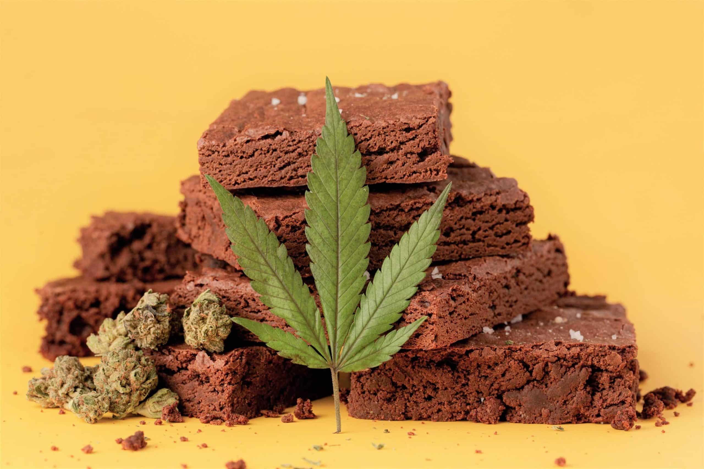

Weed brownie Recipe

Fudgy, crackly, sweet and with just a hint of weed. These pot brownies are the best way to
celebrate 420.
This recipe will knock you off your socks and taste absolutely amazing. A classic fudgy brownies,
infused with cannabutter. No fancy ingredients are needed, just a simple, classic and delicious brownies with a kick.
Ingredients
- 1 cup sunflower seed butter
- 1/3 cup maple syrup or honey
- 1 egg
- 2 tbsp cannabis infused coconut oil or hasg butter
- 1 tsp vanilla
- 1/3 cup cocao
- 1/2 tsp baking soda
Steps
- Preheat oven to 325°F. Line an 8x8 inch pan with parchmente paper
- In a large mixing bowl, heat together sunflower seed butter, maple syrup, egg/flax egg, cannabis infused coconut oil, and vanilla
- Whisk in cocao powder and baking soda
- Spread batter evenly in baking pan
- Bake for about 20 minutes. Brownies will be firm and spring back when you poke it with your finger
Links